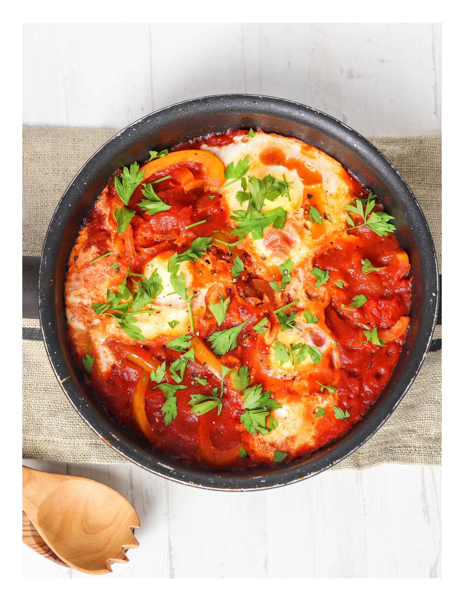

Shakshuka

Description
Shakshuka is a Maghrebi dish of eggs poached in a sauce of tomatoes, olive oil, peppers, onion and garlic,
commonly spiced with cumin, paprika and cayenne pepper.
Ingredients
- 1 White Onion, Sliced
- 2 Bell Peppers, Sliced
- 2 x 400g Cans Chopped Tomatoes
- 4 Eggs
- 15g Parsley Leaves, Chopped
- 1 TBSP Olive Oil
- Salt & Pepper
Steps
- Heat the oil in a large non-stick frying pan over a medium-high heat. Add the onion and bell peppers,
stirring constantly, and cook, for 5 minutes or until the onion and pepper have softened.
- Add the chopped tomatoes and cook, stirring for a further 5 minutes.
- Use a spoon to make 4 large holes in the tomato mixture, then crack an egg into each hole. Reduce the heat
to low, and partially cover the pan with a lid. Cook for 10 minutes or until eggs are cooked to your liking.